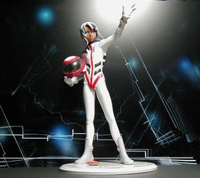
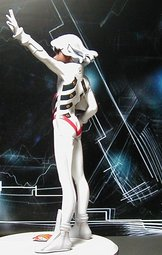
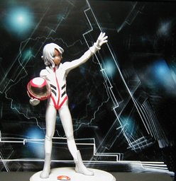

RAH.DX ロラン・セアック
Excellent Model <sub>Series</sub> Robot Animation Hero & Heroines デラックスのガンダム アーカイブズののロラン・セアックです。



「ターンＡ」すなわちというのは記号論理学において、「forall」すなわち〔すべての〕のという意味になります。そのわりには〈すべての人のための〉ガンダムにはならなかったようです。orz ナンデカナー…... 私はこのロランきゅんを買うかどうか迷ったのですが、私が女に間違えられたら大変なことが起こりそうな気がして自夙しておりました。 で、買う決心がついたのはオークションでレイン・ミカムラとぽーとふぉりおじゃなかたバンドルされていたため。むっちゃ安く手に入れることができました。アリエないくらい。 背景は Winamp の MilkDrop プラグインを WinShot したものです。 更新：2006-05-06 初公開：2006年05月06日 16:50:09 最新版：2006年05月07日 11:15:05 Links: MilkDrop: http://www.milkdrop.co.uk/ WinShot: http://www.woodybells.com/winshot.html